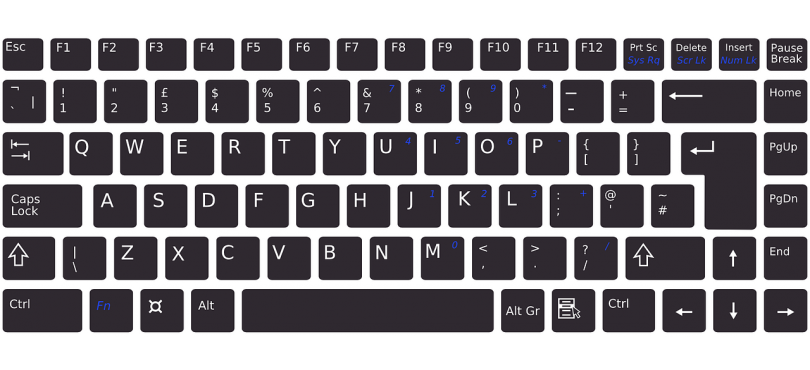
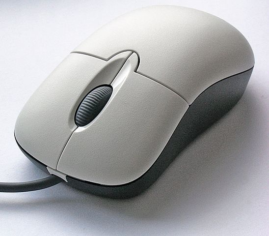
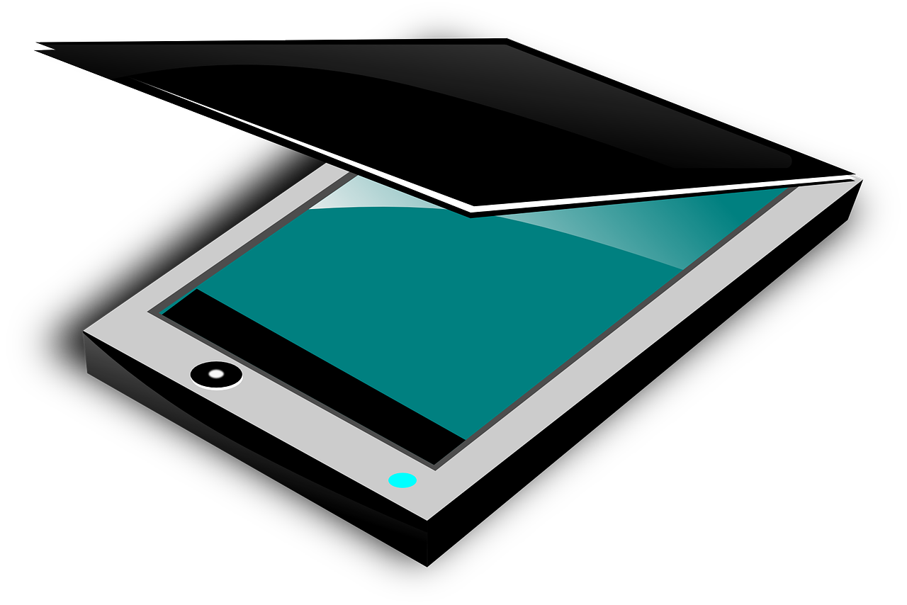
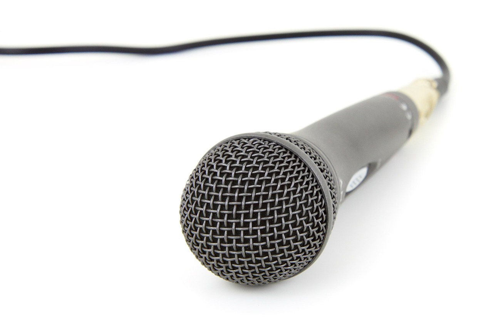

Strojna oprema računalnika

Za delovanje računalnika potrebuješ strojno opremo računalnika (computer hardware). To so vsi njegovi materialni deli. Da podatke lahko vidiš, potrebuješ računalniški zaslon, da lahko računalnik upravljaš, potrebuješ miško in tipkovnico itd. Med strojno opremo štejemo vhodne in izhodne enote, matično ploščo, procesor in pomnilne enote.
Pa pojdiva lepo po vrsti.
Vhodne enote so naprave, preko katerih vnašamo v računalnik podatke in informacije (programe). V računalniku ni črk, številk, slik in podobno, kot si nekateri predstavljajo, namesto tega so vsi podatki zapisani z nizi 0 in 1. Rečemo, da so zakodirani. Naloga vhodnih enot je, da pretvarja ljudem razumljive znake, podatke in ukaze v računalniku razumljivo zaporedje binarnih električnih signalov (01000001). Vhodne enote računalnika so zelo različne, odvisno od tega, na kakšen način želiš v računalnik vnesti ukaz. Lahko ga odtipkaš na tipkovnici, mu ga pokažeš z miško, poveš preko mikrofona ali pa sporočiš kako drugače. Tipična primera vhodnih naprav sta tipkovnica in miška.
Za vnos podatkov v računalnik torej uporabljamo naslednje vhodne enote, ki si jih bova v nadaljevanju tudi podrobneje pogledala, čeprav vem, da si se z nekaterimi že večkrat srečal:
je glavna vhodna naprava, preko katere lahko komuniciraš z računalnikom. Je bistveni del celotnega računalniškega sistema.
Uporablja se za vnos besedila, znakov in drugih ukazov v računalnik ali podobno napravo. Uporabiš jo tudi takrat, ko želiš določene vsebine pobrisati. Prav tako jo uporabljaš za premikanje po vsebinah, za potrjevanje in preklicevanje vnosov ter za podajanje določenih ukazov. Običajno jo sestavlja nekaj čez sto tipk (obstaja več različnih izvedb tipkovnice). Tipke delujejo kot stikala. Sodobna tipkovnica izhaja iz tipkovnice pisalnega stroja, saj so proizvajalci na tak način hitro pridobili veliko uporabnikov, saj se tipkanja ni bilo potrebno znova učiti. Uporablja se za vnašanje ukazov in podatkov s tipkanjem. Običajno so ti podatki različni znaki, nekatere tipke pa tudi omogočajo vnos ukazov za spremembo delovanja sistema (Bližnjice in funkcijske tipke).
Obstaja veliko različic razporeditve tipk in tudi samega števila tipk, zato obstaja veliko različnih standardov.
Najpogosteje delimo tipkovnice glede na operacijski sistem, kateremu so namenjene. Tipkovnice pa lahko delimo tudi glede na druge lastnosti, npr. brezžične – žične, standardne – ročne… Brezžične in komunicirajo z računalnikom preko Bluetooth.
Poleg tega mora biti tipkovnica prilagojena tudi posameznemu jeziku, zato obstajajo tudi različice iste tipkovnice, prilagojene različnim jezikom.
Tipkovnice so lahko tudi različnih velikosti, saj na manjših prenosnih računalnikih ne morejo in tudi niso potrebne tipkovnice z enakim številom tipk, kot jih potrebujejo programerji. Najbolj razširjena je tipkovnica polne velikosti, ki vsebuje vse tipke, ki jih povprečna oseba potrebuje.
Tab (tabulator) – to tipko uporabljaš za povečevanje zamika v desno pri pisanju besedila, uporabljaš jo tudi kot tipko za premikanje naprej po poljih v obrazcih (v kombinaciji s tipko Shift se premikaš nazaj).
Caps Lock – ta tipka je kot neke vrste zatič, saj ti pritisk nanjo »zaklene« pisanje z velikimi črkami. Pritisk nanjo prižge lučko Caps Lock v desnem zgornjem delu tipkovnice. To pomeni, da se sedaj vse črke, ki jih pritisneš, izpišejo z veliko. Ponoven pritisk na tipko Caps Lock to »operacijo« prekine (tudi lučka ugasne).
Enter – zelo pomembna tipka v računalništvu. Običajno jo uporabljaš za potrjevanje v najrazličnejših situacijah. Potrebuješ jo tudi pri pisanju besedil, saj ti pritisk nanjo povzroči začetek pisanja v novem odstavku.
Backspace – tipka za brisanje. Pobriše črko, številko ali kak drug znak v levo stran (torej nazaj) od trenutno utripajočega kurzorja (mala pokončna utripajoča črtica).
Shift (šift) – Na nekaterih tipkovnicah je le pokončna puščica brez napisa Shift, na nekaterih pa oboje. Uporabljaš jo v kombinaciji z drugimi tipkami, ali pa v kombinaciji z miško. Pritisk tipke Shift in ene od črk povzroči, da se črka izpiše z veliko. Tipka Shift v kombinaciji z eno od številk izpiše znak, ki je nad številko. Tako bi na primer znak % dobili s pritiskom tipke Shift ter številke 5.
Crtl (kontrol) – podobno kot pri Shift imaš tudi pri Ctrl dve tipki, ki sta si med seboj enakovredni. Uporabljamo jo v kombinaciji z drugimi tipkami ali pa v kombinaciji z miško. Tako na primer pritisk kombinacije Ctrl in Enter pri pisanju besedila povzroči prelom strani (za razliko od tipke Enter, ki povzroči le prehod v nov odstavek).
Alt– uporabiš jo v kombinaciji z miško ali katero drugo tipko (na primer Alt in F4 zapre odprt program).
Alt Gr (desni alt) – prav tako se uporablja v kombinaciji z drugimi tipkami ali miško. Tipka je pomembna tudi pri pisanju znakov, ki so napisani na spodnjem delu posamezne tipke (pod črko). Znak @ bi recimo dobil s pritiskom tipke Alt Gr ter tipke V.
Windows (okna) – tipka z sličico se uporablja za odpiranje Windows menija Start ter v kombinaciji z drugimi tipkami. Tako na primer kombinacija tike Windows ter črke D pokaže namizje (pomanjša vsa okna na minimum).
Esc (escape) – tipka za preklic določene operacije.
Miška je ena izmed najbolj razširjenih naprav (poleg tipkovnice) za interaktivno delo z računalnikom. Prvi večji uspeh je doživela leta 1984. Takrat, ko jo je podjetje Apple predstavil, je imela en sam gumb.
Uporabljaš jo za premikanje miškinega kazalca po zaslonu monitorja oz. po delovni površini, ki jo vidiš na njegovem zaslonu. Premikaš ga tako, da miško vlečemo po ravni in gladki podlagi. Na spodnji strani je kroglica ali optična naprava, ki zazna premik miške po podlagi. Tako sporočaš računalniku, kje se nahajaš. Miškin kazalec je na zaslonu običajno prikazan s puščico, s katero odpiraš menije, izbiraš ukaze in možnosti v pogovornih oknih. Med delom z besedilom pa ima miškin kazalec obliko, ki spominja na veliko črko I. Oblika miškinega kazalca se torej spreminja glede na to, kar trenutno delaš.
Vrsta mišk:
a) Način premikanja:
b) Povezava z računalnikom:
je naprava, ki ima nasprotno vlogo kot tiskalnik. Uporablja tehnologijo kopirnih strojev. Namenjen je zajemanju fotografij in besedil, ki ga s pomočjo programa za optično prepoznavanje znakov prenese v ustrezen uporabniški program. Te podatke je potem s posebnimi programi možno naprej obdelovati in uporabljati.
Najpogostejši razlog za pojav optičnih bralnikov v domačem okolju so verjetno fotografije. Prebrane in shranjene na disku, na plošči CD-R ali USB ključku so neprimerno bolj na varnem od originalov. Tako prebrane fotografije z računalnikom in ustrezno programsko opremo tudi prikladneje urejaš in izdeluješ albume. Zanimiva možnost je optično prepoznavanje ali OCR (Optical Character Recognition ), kot temu pravimo s tujo kratico. Vsem optičnim bralnikom je priložen takšen ali drugačen program, ki skenirano besedilo spremeni v tekstovno datoteko. Programi se po kakovosti seveda razlikujejo.
Ena od tehničnih značilnosti optičnega bralnika je ločljivost branja, kar pomeni velikost zajemanja slike. Podana je v pikah na palec (1 inch je 2,54 cm). Od ločljivosti je odvisna velikost rezultata, ki ga dobiš in količina pomnilniškega prostora, ki ga potrebuješ, da sliko shraniš. Npr. Barvna slika formata A4 pri ločljivosti 300 pik na palec zasede 25 MB prostora. Taka ločljivost bo večinoma zadoščala. Večje ločljivosti uporabljaš takrat, kadar želiš prebrati le manjši del slike oziroma manjšo predlogo.
Barvna globina opisuje maksimalno število barv, ki jih lahko neka slika vsebuje. Višja kot je barvna globina, več barv bo vsebovala. Kot zanimivost ti lahko povem, da barvna globina zajema slike od 24-bitov naprej, to je 16.777.216 barv. Prednost večje barvne globine je predvsem v pravilneje zajetih barvah, saj tako dosežemo boljše rezultate.
Delovanje optičnega bralnika:
Steklena površina je namenjena prebiranju predlog. Bralna glava je pri bralniku najpomembnejši in tudi najbolj zapleten sestavni del. Postopek prebiranja se začne, ko papir (ali drugo predlogo) položiš na stekleno površino in zapreš pokrov bralnika. Pokrov se povsem prilagodi predlogi. Prebiranje poteka tako, da z virom svetlobe, ki je sestavni del bralne glave, predlogo osvetlimo, svetloba se odbije od predloge in tipala zaznajo raven odbite svetlobe in s tem svetlost pike na posameznem mestu. Ko predlogo bralnik prebere do konca, programska oprema navadno potrebuje še nekaj sekund, da zajeto sliko prenese v program, v katerem smo sprožili branje.
Mikrofon lahko uporabiš kot vhodno enoto, s katero v računalnik vneseš zvok.
Ko je sprejemnik uho, zaslišiš zvok, ko pa je sprejemnik mikrofon, se zvočno valovanje preoblikuje v električno nihanje. Tega posebno elektronsko vezje spremeni v zaporedje ničel in enic, ki jih kot zvok razume le računalnik.
Zunanji mikrofon lahko uporabiš za zvočne konference, snemanja zvoka ali za uporabo predstavitvenih programov. Tudi če ima tvoj računalnik vgrajen mikrofon ali spletno kamero z mikrofonom, ločen mikrofon običajno zagotavlja boljšo kakovost zvoka. V primeru da ima tvoj mikrofon okrogel priključek, ga vklopi v ustrezen vtič na svojem računalniku. Večina računalnikov ima dva vtiča: enega za mikrofone in enega za zvočnike. Najdi sliko mikrofona poleg vtiča. Mikrofoni vklopljeni v ustrezen vtič bodo po navadi privzeto uporabljeni. V primeru da imaš mikrofon USB, ga vklopi v katerakoli vrata USB na svojem računalniku. Mikrofoni USB se obnašajo kot ločene zvočne naprave, zato moraš navesti, kateri mikrofon želiš privzeto uporabljati.
Če uporabljaš digitalni fotoaparat ali kamero kot vhodno enoto računalnika, vedi, da je namesto filma v aparatu več optičnih tipal, ki so občutljiva na svetlobo. Ko se zaslonka fotoaparata odpre, pade svetloba na ta tipala. Vsako tipalo zazna jakost svetlobe, ki je padla nanj. Iz tega podatka posebna elektronika ugotovi, kakšne barve je svetloba, in pošlje proti računalniku ustrezen signal. Zanimivo, kajne?
Rdečo barvo predstavi npr. z nizom 110000, zeleno z 001100 in modro z 000011. V računalniku se signali posameznih tipal združijo v fotografijo. Vsako tipalo določi barvo ustrezne točke na fotografiji. Če je tipal malo, oko točk ne zlije v celoto, ampak vidiš točkasto fotografijo - kvadratke. Zato je pri digitalnem fotoaparatu ali kameri pomemben podatek, koliko tipal ima. Dobri fotoaparati oz. kamere imajo prek milijon tipal.
Za primerjavo ti povem podatek, da ima človeško oko 120 milijonov vidnih celic, klasična barvna foto razglednica pa je sestavljena iz več kot dvajset milijonov pikic.
Tvoj digitalni fotoaparat verjetno nima vgrajene povezave Wi-Fi ali mobilne podatkovne povezave, zato fotografij ne moreš samodejno naložiti neposredno iz nje brez dodatne strojne opreme. Če pa digitalni fotoaparat povežeš z računalnikom prek kabla USB - ali odstraniš kartico SD in jo vstaviš v računalnik - lahko računalnik takoj prevzame in samodejno naloži te fotografije. Če bi želel vedeti, kje si posnel kakšno fotografijo, si želiš fotoaparat z vgrajenim GPS modulom. Informacijo o lokaciji posnetka lahko prebereš z aplikacijami, kot sta GoogleEarth ali Picasa. Glede na funkcije GPSa lahko nekateri fotoaparati uporabljajo modul tudi za druge koristne informacije, kot so: označevanje znanih stavb, nastavitev lokalnega časa, beleženje poti ali celo kot osnovna navigacijska naprava. Si to že vedel?
Digitalne kamere na splošno lahko izdelajo slike z ločljivostjo do 2MP, pri velikosti 1600x1200 pik, vendar številni izdelovalci ponujajo tudi kamere s še višjo ločljivostjo. Slike so primerne za pošiljanje razglednic, prikazovanje na zaslonu in uporabo po spletu. Odtisi so zaradi slabe kakovosti kamer slabši, prav tako niso razvidne podrobnosti.
Morda že poznaš računalniško vhodno napravo svetlobno pero (light pen)? Podobna je običajnim peresom in služi za podajanje položaja na računalniškem zaslonu. Pri nekaterih programih CAD lahko s svetlobnim peresom spreminjaš obliko, velikost, položaj in barvo delov narisane slike. Uporablja se tudi za upravljanje grafičnih tablic (podobno kot funkcija prsta pri zaslonih na dotik).